ワキ8000・スニ40
モデルアイコンのキットを組み立てたものです。
12月7日に、床下各種パーツを追加して形式写真を入れ替えました。
12月7日に、床下各種パーツを追加して形式写真を入れ替えました。

ワキ10000にベンチレータを取り付け、スニ40付属の妻板を使用してワキ8000として組み立てました。
- 台車はKATOスニ40用。取り付け部は3.2φプラ丸棒でねじ止め化。
- カプラーは見た目優先で車間短縮用ナックルにしました。カプラーの車体にあたる部分をちょっと削っています。
- ベンチレータは、キット付属のものではなくトミックスの旧客用を使用しています。
- 青15号はモリタ、銀色はつや消し白を混ぜて白アルマイトを表現したつもりですが、模型的に微妙かも。
- KitcheNのパーツで、ブレーキテコ、ステップ、緊解表示を取り付け。
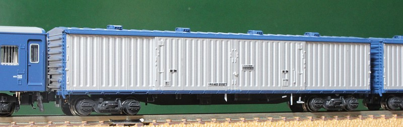
スニ40。KATOの短いやつを休車状態で持っていましたが、「意外と長い」スニ40がようやくデビューしました。
とはいうものの、私にとっては一緒に見ないとわからないレベルかと(適当)。 実際、ワキ8000と同時に組んだのですが組んでる途中にも何度か間違えました…。
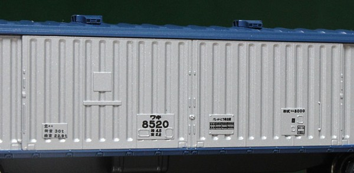
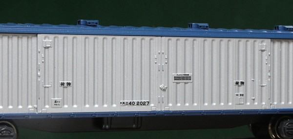
表記類です。とはいて指定されたRLFのものをそのまま貼り付けただけなんですが。
パレット搭載位置のインレタとか、肉眼ではほとんど読めないのですがカメラで撮ると読めたりして、よくできてます。
あとスニ40、形式表記とパレット搭載位置指定で位置合わせ失敗してるんですが如何せんベースが銀なのでやり直すリスクが大きく…。
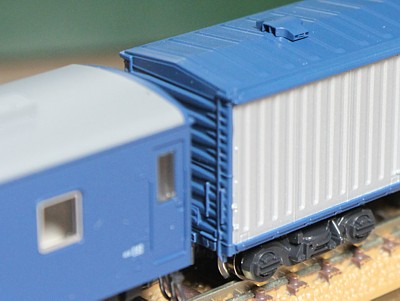
妻板〜屋根周り。真面目に隙間を埋めた効果がありいい感じです。
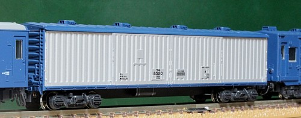
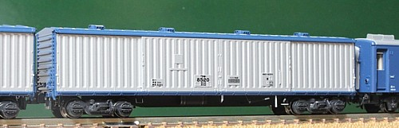
床下ディテール追加前後です。間違いさがし状態、ですが。
黒一色なうえに超細いステップはわからないとして、白が入るブレーキテコと緊解表示はなかなかよいです。
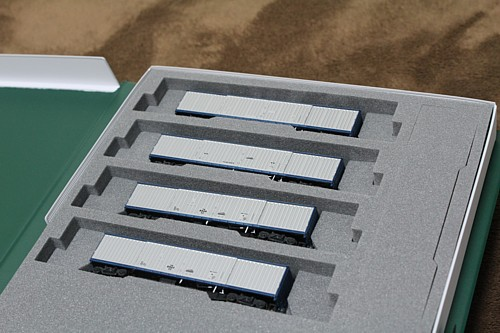
収納です。
7両ケースは効率悪いし…と、手持ちの10両ケースを加工してみました。
あと6両、ワキ/スニが増やせます。
メイキング
今回は詳しめに組立手順を書いてみました。 とはいえ、ごく普通のプラモの組み立て方なのですが…。
組立(1)
- 各部品を切り出します。ゲート位置が考えられており、かつ細いので簡単。
- ワキ8000・スニ40ともに屋根にベンチレータ取り付け用の穴を開けます。 今回は付属のものでなくトミックスの旧客用(PB6108)を使用するので、それに合わせた間隔で開けます。 穴径忘れましたが、確か0.6φだったような… ケガキして間隔をとっても良いのですが、サボってマスキングテープに間隔を書いたものを貼りながら場所を決めました。
- この時点では塗装を考慮しベンチレータはつけません。
- 屋根と妻板を接着します。今回はここに限らず、タミヤの流し込みタイプ(緑キャップ)を使用しています。
- 側板は塗装後に接着するのでこの時点ではつけません。 が、屋根と妻板の取り付け角を出すためマスキングテープで仮組して固着を待ちます。
- ここで一晩放置。
下地
- 屋根と妻板との接合部の隙間埋めをします。 タミヤパテ(ベーシックタイプ、灰色のやつ)をプラ用薄め液で溶いたものを塗ります。 激しく肉やせするので数回に分けて。
- これも一晩放置後にヤスリ掛け。 1.0tプラ板に紙やすりを貼り付けたもので、#400→#1000→#2000とやりました。 ちなみにパテが余計なところについてしまった場合、固まると削るのが面倒です。 乾燥する前に竹串などで除去しておくと後が楽です。乾燥してしまったら、下手にヤスリ掛けせずに薄め液で取ったほうが楽です。
- 成形不良があれば修正します。ワキ10000は問題なかったのですが、 スニ40のほうは屋根で裏側からの突出しピンが一か所屋根を割ってました。 2枚ともそうだったのでたぶん全部そうかと。 溶きパテを塗って亀裂を埋めます。付近の屋根のゆがみの修正はあきらめましたが、凸部を修正するだけでずいぶんましになった気がします。
- あと、スニ40は側板のうち1枚にウェルド付近で樹脂が流れておらず、溝ができてます。 側板のコルゲートの底に筋状にへこみがあります。こちらも2枚ともそうだったのでたぶん全部そうかと。
- このほか、屋根の側面が荒れているのでこちらもかるくヤスリ掛け。
- 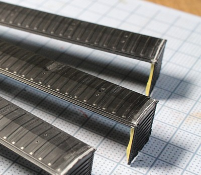
塗装
- 塗装前に、側板と屋根・妻板の接着面をマスキングします。 塗装後に接着する場合、これをやっておくと接着剤のはみだしが起きにくくなるほか、強度面でも有利。 逆にやらないと接着面から接着剤に溶かされた塗料が…。
- 側板は銀で塗装。つや消し白を 1/3 くらい混ぜ、白アルマイトの気分。 これをすると単品ではかっこいいのですが、KATO製とはちょっと色が違ってくるかも。
- 屋根と妻板はガイアのねずみ色1号で下塗り。 青15号の発色をよくするのが目的です。
- またここで一晩放置。
- 側板をマスキング。側引き戸中央部はレールにかかっていますので、 マスキングテープは1枚でビューっとやらず、中央部は別のテープでやや下げるとともに下断面に回り込ませています。
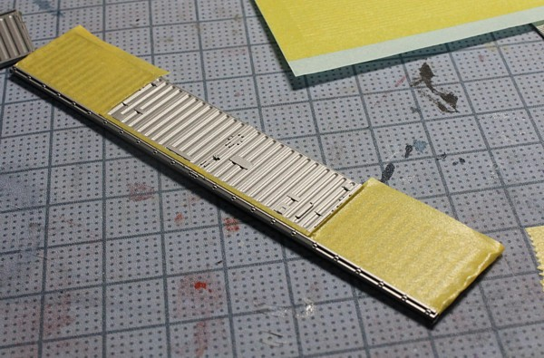 - 青15号をまとめて塗装するため屋根にベンチレータを付けます、が、根元まで押し込まず浮かせておきます。 根元まで押し込んでしまうと、凹み部に塗料が回らず苦労しますので。
- モリタ青15号吹きつけ。
-
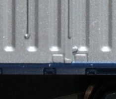
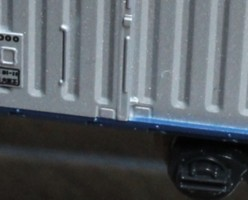
↑このあたりにこだわったのですが…、写真に撮ると別の粗が目立つような。
組立(2)
- 浮いてるベンチレータを押し込みます。
- 側板を屋根・妻板に組み合わせて接着。
- 床板をはめ込み。これもスニ40はツメが高すぎて外すのが大変なのと、床板が若干厚くてはまらず車体が膨らみます。 ツメは削り、床板のはめ合わせも床板を削って対応。 ワキ8000のほうはきれいにはまります。
- インレタ貼り付け。 ベースが銀なのと、RLFのインレタの糊が強いのと(これはいいことですが)で失敗すると ベースの銀がはぎとられていきくためやり直しが効きません。 とはいえ冷や汗かきながら何度か剥がしましたが…
透明デカールに転写してから貼るとうまくいきそうですが、デカール苦手なのです。 - 2000番台は幅が広すぎて入りません。横軽対策マークをずらしてなんとか…。
床下
- ボルスタ上側の穴に、1.0tプラ板をちょうど入るサイズにして接着。
- ボルスタ上記プラ板ごと穴を開け、3.2φプラ丸棒を接着。そのままつけると薄くてガタガタになるのですが、こうすると強度が出ます。
- KitcheN各種パーツを貼り付け。ブレーキテコ・ステップと、 緊解表示はそのままだと強度が不安なので裏側にはんだを流して補強しました。 ステップは写真を見ながらそれらしく曲げましたが、あってるんだか…
- 酸化膜除去(ブラスクリーナー)後、金属部にプライマを塗布。マッハのメタル用シールプライマーを ラッカーシンナーで薄めたものです。車体をやるときは気を使うのですが(プラスチックにつけるとアウト)、まぁ床下ですので。
- つや消し黒塗装後、台車取付。缶スプレーでお手軽に。
- エナメル白でブレーキテコ、ステップ等に色入れ。
側板と屋根・妻板のあいがよいのがなにより気持ちよかったです。
床板のはめ込みが考慮してあるのも地味にうれしいです。
こういうバランスと精度のよいキットがどんどん出てくるとうれしいですね。
貨車はまだまだネタがあると思いますし…。